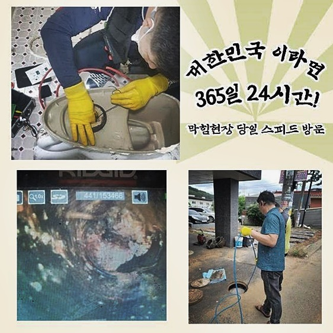
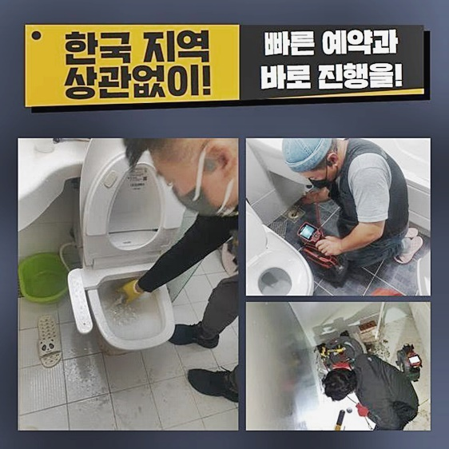
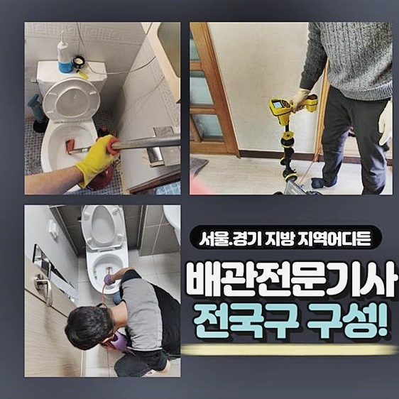
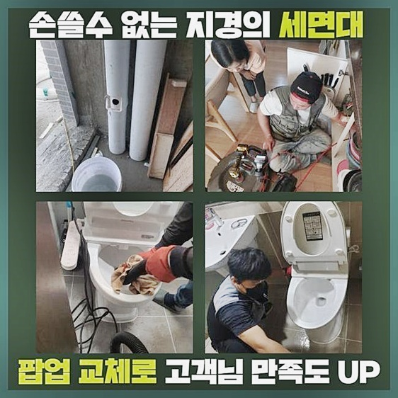
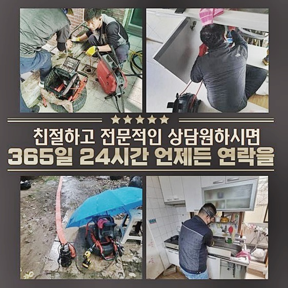
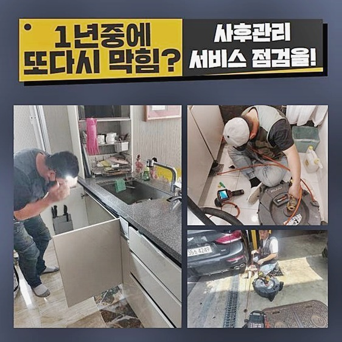
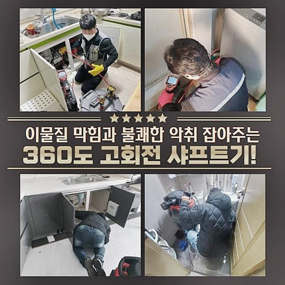

🏠 안성 봉남동 하수구막힘 뚫음 신소현동 배수관청소
안성 남동 싱크대막힘 전문 시공 후기

📋 작업 개요
- 위치: 안성 남동, 남동, 안성
- 서비스 유형: 싱크대막힘, 하수구막힘, 배관막힘, 누수수리, 역류해결, 뚫는업체, 배관청소, 악취차단
- 작업 일시: 2024. 6. 4. 17:07
- 업체명: 하수구수사대 (010-5615-2118)
🔍 문제 상황
안성 봉남동 하수구막힘 뚫음 신소현동 배수관청소
하루를 보내시다가 아무런 예고도 없이 하수구가 무언가로 가로막힌다면 일상 루틴이 불가능합니다
지금부터는 하수구가 고장났을 때 바람직한 행동강령에 대해 전달드리도록 할테니 새겨 보시기 바랍니다
식사 준비를 하는 시설인 주방 배관의 막힘이 나타나면 즉시 구성원의 식사도 제 시간에 먹지 못하니 생활 자체가 곤란해 집니다
깊숙이 고인 썩은 물이 겉으로 유출되어 나쁜 냄새도 촉발된다면 지체없이 문제를 대응하려 발 벗고 나섭니다
의도는 좋지만 저희는 고객님 선에서 청소를 빈틈없이 마무리 짓는것은 가능성이 낮다고 말씀을 드린답니다
하수도 물이 거꾸로 올라온 상황에 도달했다면 분명 하수구 내부 어딘가에 여러 종류의 찌꺼기가 융합됐을 것이니 첨단 기기를 작동시켜야 하는 상황이 번번이 발생한답니다
보고 계시는 막힘을 개선시킨 현장 역시 다를 바가 없었습니다
더러운 하수구 물이 잔뜩 뿜어져 나왔고 악취도 동반된다고 하셨습니다
일단 처리하자 싶어서 용해제와 철 막대로 관통해보려 했지만 역으로 역류해서 싱크대 하단장의 아래에 물이 가득 차오른 형국이라 빨리 와달라 요청하셨죠
얼른 내방을 드려서 검사해 보니 바닥부가 혼란스러운 상황이었고 누런 물에다가 찌꺼기의 일부도 함께 솟아올라서 인지 악취가 참기 어려웠어요

🔎 원인 분석
💡 전문가 진단: 정밀 진단 장비를 사용하여 슬러지의 고착 여부를 판명하고 타격/세척 작업을 실시했습니다.
주위를 탐색하면서 기능과 외관을 확인했더니 막힌 사고만 있었지 연결된 주름관에는 트러블이 생기지는 않았다고 판단됐어요
혼자 처리하시는 분들 중 배관이 파손되는 일이 은근히 자주 생깁니다
간략하게 상황 분석을 종료했으니 싱크 하부장 하단부의 통로에다 석션기를 주입하여 핵심 과제인 막힘 작업에 착수했습니다
이 장비는 보편적 청소기가 아니라 액체도 흡수하는 성능이므로 배관 속을 전부 비워주고 작업의 바탕을 만들어 줍니다
틈 없이 찰랑대는 하수를 빼내면서 노폐물도 함께 투출되는 모습이 보일 때도 있습니다
강한 흡입력으로 액상을 집어삼켰지만 오염통에서 별도의 건더기로 보이는 부분은 없었습니다
일차적으로 하수를 비워냈으니 다음은 깊숙한 하수관 안에 카메라를 도입하여 하수구의 컨디션 검토를 시행해 봤어요
매우 세밀한 노즐 말단에 촬영기기가 장착되어서 어두컴컴하게 막힌 구조의 배관이라도 검증할 수 있습니다
모니터에서 드러나는 적색 계열의 현상들이 지방질 물질인데 기름끼리 접착된 슬러지가 매달려 있는 불결한 모습이 드러났어요
더 내부에 이르도록 깊숙히 밀어넣으니 점성이 엄청난 기름 잔여물이 눈에 띄였어요
단지 배관 회로만 비좁아진게 아니고 속을 가득 메웠던 거대한 찌꺼기가 있었습니다
막힘을 만든 주된 요인을 알아챘으니 고객님께 말씀드리고 작업 계획을 알리고 타겟을 세워서 표적 작업합니다

🔧 작업 과정
호스를 위로 당겨서 내시경을 복귀시켰더니 끈적한 슬러지가 기계 겉면에 배어 나와서 유해한 냄새가 진동을 했네요
배관이 이렇게 불결했다면 아마도 이전에도 여기서 곰팡이가 계속 생겼다거나 반복되는 냄새 문제로 불편을 체감하셨을 거예요
속시원하게 관로를 정비를 거치게 된다면 이와 같은 생활의 어려움도 잠재울 수 있답니다
수북이 모인 슬러지를 걸레로 훔쳐내고 다시금 배관 속에 배치하여 실행할 범주를 결정했어요
키친타올이나 과일 껍질과 유사한 물건이 멈춰 있다면 후크로 당기는 기술로 깨끗이 했겠지만 슬러지가 주범이니 강력한 플렉스샤프트 장치의 지원을 받아야만 했어요
이 샤프트는 배관 속에 결착한 기름 덩어리나 찌꺼기를 추출하고 절단하여 꺼내주는 작업에 기능을 발휘하는 장비입니다
헤드에 연결하는 부속이 강한 체인이기에 딱딱한 슬러지 용해하는 능력도 우수한 편입니다
싱크대 하단부의 막힘 문제의 발단이 기름질이면 믿음으로 애용하는 맞춤 기기라해도 과언이 아닙니다
내부의 영상을 찍어서 흐름이 정지된 지점을 관찰하는 동시에 내부 질서를 잡았습니다
대상을 조금씩 분해하며 갈아주는 과정을 거치고 석션을 들여보내서 흡수해서 끌어올리면서 보기 좋게 변신했어요
갈린 찌꺼기를 꾹 눌러 흘러가도록 만들면 심층부에 자리해서 수습이 어려운 차단 요소가 탄생할지도 모르니 흩어진 파편은 석션기로 공을 들여 빼내는 단계를 매 현장에서 이행합니다
다수의 가구가 공동 이용하는 규모가 큰 하수 처리 시설에 막힘 현상이 시작된다면 작업량이 어마어마하니 힘을 가하여 밀어주는 전략을 쓰게 됩니다
좁은 배수로에서 막힘이 나타난 경우라면 찾아낸 관련 요인을 해결하는 부분에 핵심 가치를 두고 정리를 해드리고 있어요
처리에 많은 시간이 소요돼도 말끔하게 하수관 안을 쾌적하게 만들면 막힘의 재발로 인해 재작업하는 일이 없어요
수행하는 당일에 좀더 신경써서 제대로 수행하여 본질과 장기적 영향까지 다스리는 것이 배관 전문가들이 가져야 할 책임이지 않나 싶습니다
주방 배관 청소작업을 완벽하게 수행하고 안쪽 상황이 맑은 물이 흐르는 점을 알아차리게 됐네요
붉은 빛이 흔적도 없도록 청결하게 조치했으니 유사한 차단 현상이 거듭 일어날 일은 확실히 경감될 것입니다
눈으로 하는 검증 이후에 기능상도 괜찮나 보려고 배수 검사를 해봤어요
미처 처리하지 못한 오류나 결함들이 잔재했을 경우도 있기에 물을 한껏 담은 뒤 쏟아부어 보았습니다


✅ 작업 완료
다행이도 시원하고 거침없이 배출되어 청소가 잘 이루어졌구나 생각했네요
아무 생각없이 뚫다가는 배관이 다쳐서 누수 등이 작용할 수 있으니 하수구 정비 전문가에게 호출을 하셔서 곤란을 타개하시라고 안내드리고 싶습니다
배관문제는 빠를 수록 좋은데 한시간 내로 언제든지 고객님을 찾아뵐 수 있으므로 대기가 길지 않을겁니다
투명성을 기반으로 한 작업으로 경제적인 고충도 적극적으로 낮춰드리려 노력하니 이것저것 고민 없이 의뢰를 맡겨주시면 속히 내방드릴게요
노하우와 정보력을 필두로 무결점의 배관 뚫음 작업을 전담 해 드리겠습니다




⚠️ 베란다 누수 및 방수 관리 방법
- ✅ 비가 많이 올 때 창틀 주변이나 아래층 천장에 얼룩이 생기는지 정기적으로 확인해 보세요.
- ✅ 우수관 주변 실리콘 마감이 들뜨거나 깨진 틈새가 있는지 손상 여부를 수시로 체크하세요.
- ✅ 베란다 바닥 타일의 줄눈(메지)이 소실되면 그 틈으로 물이 침투하여 누수가 유발됩니다.
- ✅ 누수 의심 증상 발견 시 방치하면 아래층 손실이 커지므로 즉시 전문가의 진단을 받으십시오.
💡 핵심 정리
- 확실한 장비 작업(내시경 점검 및 샤프트 스케일링)으로 원인을 뿌리 뽑습니다.
- 작업 후 1년 이내에 동일한 부위 재발 시 100% 무상 A/S 서비스를 보장합니다.
- 서울 · 경기 · 인천 전 지역에 24시간 언제든 긴급 출동할 수 있도록 항시 대기 중입니다.
❓ 자주 묻는 질문 (FAQ)
🚨 안성 남동 싱크대막힘 문제로 고민이신가요?
정확한 원인 진단과 확실한 시공으로 재발 없는 해결을 약속드립니다.
24시간 긴급 출동 | 서울 · 경기 · 인천 전지역 | 1년 내 재발 시 무상 A/S